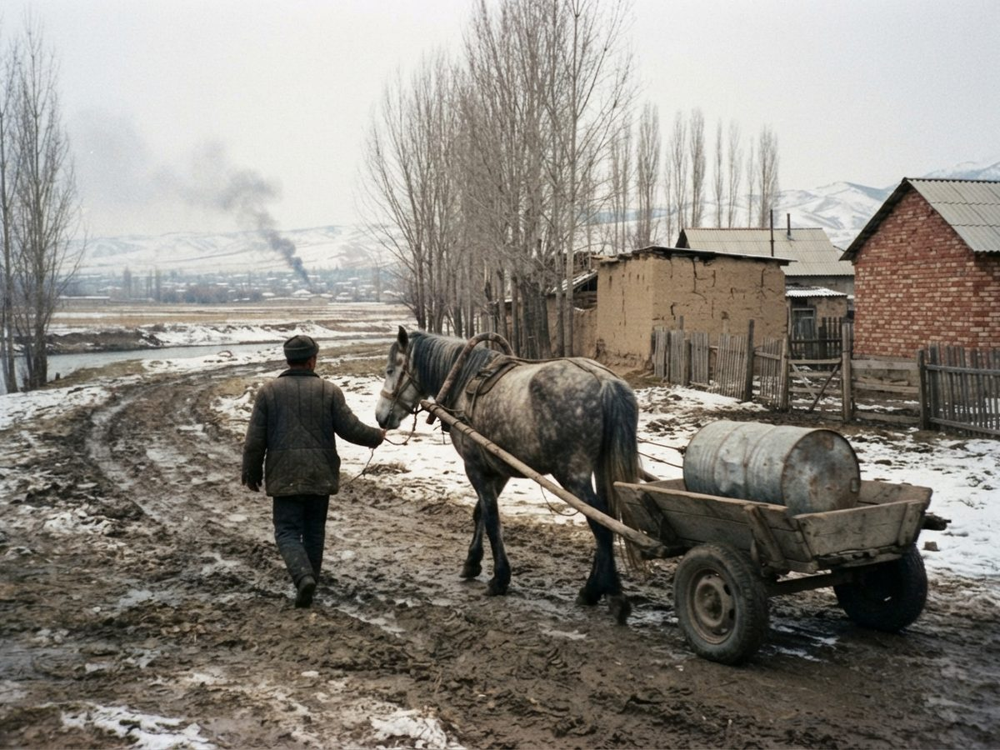

Suuchu Chongtor mare, grey, foaled 1983famous
Name: water-carrier (nickname) (Iradi)
| Sire | Kümüsh 1977 |
|---|---|
| Dam | Mor-Jan 1968 |
| Dam's sire | Uzun-Tash 1958 |
| Breed | Chongtor |
| Sex | mare |
| Colour | grey (boz) |
| Foaled | 1983 |
| Height | 138 cm (13.2 hh) |
| Breeder | Collective farm herds, Talas and Chu valleys |
| Owner | Irad State Hippodrome |
| Studbook | CH 727 |
| Inbreeding | 13.0% |

In the Siege of Talas (1992), with the mains cut, the Hippodrome horses hauled water carts up from the river under mortar fire. She made some 200 runs (stable hand Borubai Zhumagulov). Registered name not recorded; entered under her nickname.
Summary
0 recorded foals. 0 full and 2 half siblings out of the dam.
Pedigree
| Kümüsh 1977 black CH 651 | Uzun-Tash 1958 black CH 406 | Mor-Tütün 1938 bay | Boran-Kulan 1928 | Chyn-Jan 1922 |
| Muzdak-Bugu 1924 | ||||
| Boz-Kush 1926 | not recorded | |||
| not recorded | ||||
| Muzdak-Jaryk 1947 black | Uzun-Bulak 1935 | Bata 1930 | ||
| Jash-Iz 1927 | ||||
| Erkin-Kün 1938 | not recorded | |||
| not recorded | ||||
| Kosh-Alma 1960 dun CH 434 | Jash-Möngü 1953 dun | Kichi-Karsak 1931 | Kökjal 1919 | |
| Boz-Taka 1925 | ||||
| Ala-Bulut 1948 | Bata 1930 | |||
| Erkin 1940 | ||||
| Kök-Bee 1945 blue roan | not recorded | not recorded | ||
| not recorded | ||||
| not recorded | not recorded | |||
| not recorded | ||||
| Mor-Jan 1968 black | Uzun-Tash 1958 black CH 406 | Mor-Tütün 1938 bay | Boran-Kulan 1928 | Chyn-Jan 1922 |
| Muzdak-Bugu 1924 | ||||
| Boz-Kush 1926 | not recorded | |||
| not recorded | ||||
| Muzdak-Jaryk 1947 black | Uzun-Bulak 1935 | Bata 1930 | ||
| Jash-Iz 1927 | ||||
| Erkin-Kün 1938 | not recorded | |||
| not recorded | ||||
| Toru-Kaiyng 1954 dun | Toru-Muz 1933 grey | Jash-Chabysh 1924 | not recorded | |
| not recorded | ||||
| Kök-Jal 1929 | Tütün-Baatyr 1920 | |||
| Itelgi 1926 | ||||
| Tolkun 1946 grey | not recorded | not recorded | ||
| not recorded | ||||
| not recorded | not recorded | |||
| not recorded |
Repeated in this pedigree: Bata x3 Uzun-Tash x2 Mor-Tütün x2 Muzdak-Jaryk x2 Boran-Kulan x2 Boz-Kush x2 Uzun-Bulak x2 Erkin-Kün x2 Chyn-Jan x2 Muzdak-Bugu x2 Jash-Iz x2
Siblings out of Mor-Jan
| Name | Foaled | Sex | Colour | Sire | Dam | Breed |
|---|---|---|---|---|---|---|
| Kök-Tash | 1977 | gelding | black | Kümüsh-Bulut | Mor-Jan | Chongtor |
| Kümüsh | 1988 | gelding | grey | Kök-Jan | Mor-Jan | Chongtor |